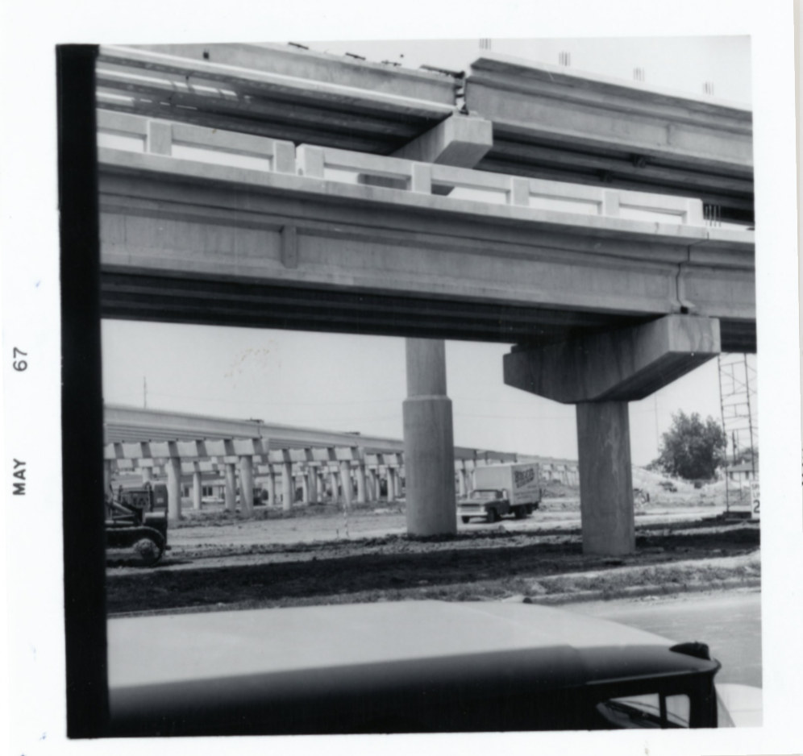
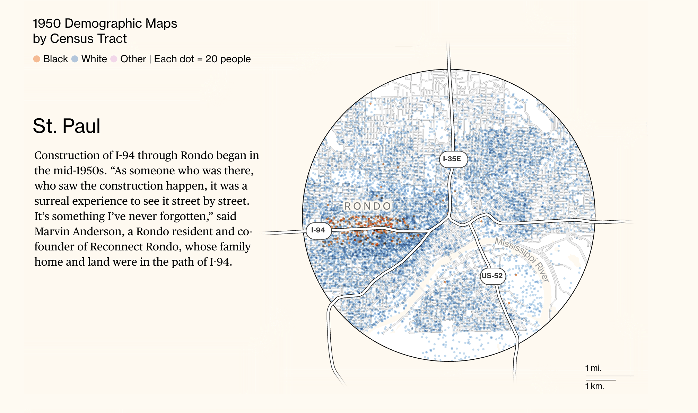
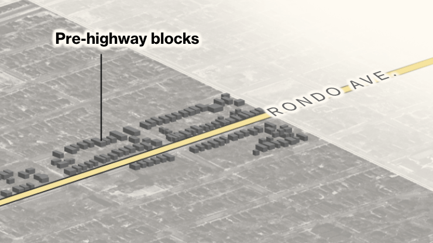

Interview with Graphics Journalist Rachael Dottle
Skills to create beautiful and engaging maps can be strengthened in a semester, says Bloomberg graphics journalist.
The type of narrative, map-based digital projects we see in the news, like the recent CityLab project documenting racist urban infrastructure in St. Paul, Minnesota require many research and technical skills to pull off.
The Harvard Map Collection asked Bloomberg graphics journalist, Rachael Dottle about her methodology in scoping, researching, and creating maps for this story.
Rachael helps us peek under the hood to learn how the maps in the piece were created, and talks about how she thinks students can start to build their storytelling skills using digital map making.
About Rachael
Rachael Dottle studied urban studies, architecture and sociology at Barnard College. There, she learned mapping by taking GIS courses. She attended Columbia University for a Data Science masters afterwards, focusing on spatial statistics. She worked for the transit system in New York City for a bit, before seguing into journalism. Prior to working at Bloomberg, she was a graphics journalist at FiveThirtyEight Politics.
Project scoping
We were interested in how Rachael initially thinks of ideas for stories, and then hones them into something achievable. Especially working with tight deadlines, how can you move smoothly from brainstorming to executing a mapping project?
For the recent CityLab piece, Rachael started framing her project by thinking about political significance and data availability.
DOTTLE: “I knew right off the bat that NHGIS, the program at the University of Minnesota, has all that historical census data available as shapefiles, so I thought, alright, I’m going to start with the 1950 data. Starting at the census tract level, I can deep-dive into data for some of the cities I know had highways built through black neighborhoods. I started my project with what I knew about cities with highways constructed, and what I knew about what data is available.

“I knew there were certain cities we wanted to focus on, from a narrative perspective. Miami was of interest, because there are ongoing highway construction projects. New Orleans was in the news, from Biden’s mention of it, and from previous CityLab stories. CityLab also had covered St. Paul, and I knew there was discussion in the State Senate and House about money being approved for the land bridge. Those were the newsworthy angles, and I went in looking at data for those.”
To map or not to map?
HARVARD MAP COLLECTION: When you are deciding if you need to use or create maps for a story, what informs that process?
DOTTLE: “I often start my process by making maps. If anything can be mapped, if there is any geographic component to a dataset, I’m going to put it on a map to look at it.
If the spatial relationships aren’t immediately obvious once I put data on a map, I might take it away from the map and put it in R Studio, to explore the data in other ways. If I do see something right away spatially, I will keep exploring on the map.
The other reason I may use a map, even if there aren’t immediately intriguing spatial patterns is if the geography is a part of the story in some way. For instance, if it’s a climate story and there’s something to do with rain, even if the patterns don’t make sense to me, I might still use a map, because people will recognize geography and might be able to place themselves.
I wouldn’t use a map if the geography is confusing to readers. For instance, some of the cities we used aren’t immediately recognizable at the neighborhood level. If you’re not a resident of St. Paul, a zoomed-in map of the “Rondo neighborhood” might not help you. If you can’t include a locator map in those cases, you might not want to go the map route.”
Selecting tools
HARVARD MAP COLLECTION: What advice would you give students setting out on their first digital mapping project?
DOTTLE: “A project like this takes a lot of different skills that I picked up in various places. I never learned Illustrator in my GIS courses, which I now see as essential to my work.
Mapping software allows you to perform many uniquely spatial functions, like georeferencing a map, digitizing the layers, or performing the dot density analysis, but if you don’t have the ability to represent your data with the degree of control you’d like to, you won’t get your point across. All of that work, and people won’t spend very long looking at your map. I find the degree of control in standard mapping software limiting.
Illustrator is complicated, difficult to learn quickly, and sometimes imperfect. In this project, I could barely open the dot density files in Illustrator, because the file sizes were so large.
But there are simple things that you can learn. Opening the map. Learning to look at the layers. Selecting certain elements. Changing colors and deleting stuff you don’t want. It’s all stuff that I think you can learn in a semester. But you have to be given the opportunity to learn it. I don’t think GIS classes often have that incorporated.
Starting out, if you don’t have very much time and want to get something done, pick one method to focus on. “I’m going to represent a historical map, and I’m going to digitize two pieces about it.” You don’t want to do too much if it’s your first GIS project. Don’t go adding census data, because you won’t have time to visualize it.
You should also make sure you are really understanding data literacy principles. Really understanding data is not always included in GIS courses. You learn all these clicking tools and you’re looking at all this data, but you don’t quite understand what you should be focusing on in the data versus what is just distracting.”
The project
What it Looks Like to Reconnect Black Communities Torn Apart by Highways, Rachael Dottle, Laura Bliss and Pablo Robles, Bloomberg CityLab, July 28, 2021.
How does it all work?
Timeframe
~ 3 months
Tools used
-
QGIS
-
Photoshop
-
Illustrator
Technical steps
- Gather data during research
- Preview and clean data in QGIS
- Style photos and maps in Photoshop
- Bring everything into Illustrator
- Style maps and create page layouts in Illustrator
- Run
ai2htmlscript on Illustrator files - Bring generated website code into an HTML page
- Add CSS for styling and JavaScript for scrolling
The Maps
Dot Density

- Dot density maps can be a nice way to show multiple attributes alongside one another.
- In this case all three race designations, as coded in the 1950s as “black,” “white,” and “other” are shown at the same time, each dot representing twenty people.
- Contrast against choropleth mapping for population.
- Rachael used the QGIS Research Tool, Random Points Inside Polygons to create these maps.
Perspective

- These perspective maps are not using 3D data; it is an effect created in Photoshop.
- The 3D-looking building data was derived by tracing building outlines from historic maps in QGIS.
Animated transition

- Two images are positioned atop one another in a web page. The transition is controlled with CSS and JavaScript.
- The map edge effect, which evokes memories of the paste-ons you can find in real Sanborn atlases, was achieved using a drop-shadow and the Photoshop eraser tool.
- Maps like these are archived in the Harvard Map Collection. You can look at them in person, or use them in your digital project by contacting maps@harvard.edu.